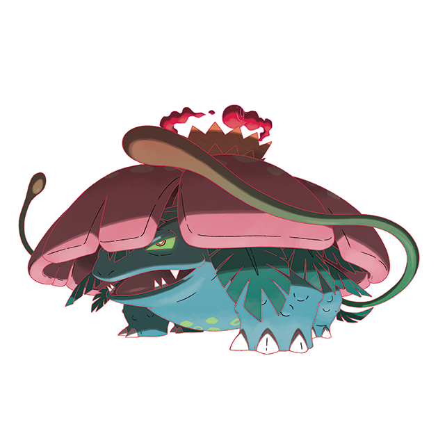
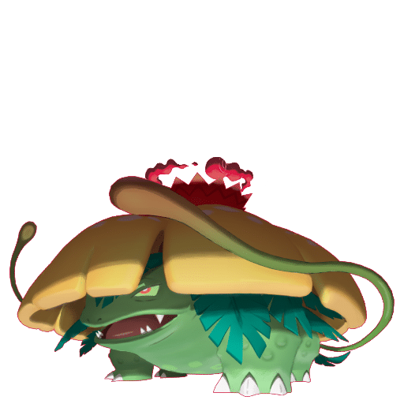

What is Gigantamax Venusaur?
Gigantamax Venusaur is a special form of Venusaur introduced in Pokémon Sword and Shield. Unlike regular Dynamax Pokémon, Gigantamax forms change both appearance and their exclusive move.
When Venusaur Gigantamaxes, its flower grows into a massive canopy that releases toxic pollen across the battlefield, turning it into a long-duration pressure-based attacker in Max Battles.
G-Max Vine Lash (Signature Move)
- G-Max Vine Lash is Venusaur’s exclusive Gigantamax move.
- Deals Grass-type damage on impact.
- Applies residual damage over time for several turns to all non-Grass opponents.
- This makes it especially effective in longer raid battles where chip damage adds up.
Typing & Battle Overview
- Type: Grass / Poison
- Weak to: Fire, Flying, Ice, Psychic
- Resists: Water, Electric, Grass, Fighting, Fairy
Venusaur doesn’t have extreme weaknesses, but Fire and Flying attackers are consistently the safest way to deal with it.
In Pokémon GO Raids
How it performs:
- Acts as a bulky raid boss with sustained pressure rather than burst damage
- Becomes more dangerous in long fights due to DoT effects
- Difficulty scales heavily with group size and coordination
Weather Impact
- Sunny / Clear: Boosts Venusaur’s Grass moves and makes raids harder
- Windy: Helps Flying and Psychic counters perform better
Shiny Appearance
- Normal Venusaur has a bright green body with a pink flower
- Shiny Venusaur is darker with a slightly muted, yellow-toned flower
- Gigantamax form makes the shiny difference more noticeable due to its large flower canopy
Why Trainers Care About It
- It is part of the original starter Gigantamax lineup
- Useful Grass-type attacker for raids when properly supported
- Limited-time availability makes it a collection target
- Performs well in group-based Max Battles
PvE vs PvP Use
PvE: Viable Grass attacker, but outclassed by top meta Megas and Shadow Pokémon.
PvP: Regular Venusaur is the competitive pick; Gigantamax form is mainly for raids and events.
Pokédex Insight
Venusaur converts sunlight into energy through its large flower, releasing it in powerful bursts of nature-based attacks when fully charged.
Is Gigantamax Venusaur Worth Raiding?
For most trainers, Gigantamax Venusaur is worth raiding at least a few times. While it isn't the strongest Grass-type attacker in Pokémon GO, it offers good collection value, a chance at a shiny encounter, and access to one of the original Gigantamax starter Pokémon.
Reasons to Raid Gigantamax Venusaur
- Collection Value: Gigantamax Pokémon are usually available only during limited events, making them desirable additions to a collection.
- Shiny Hunting: Trainers have a chance to encounter a shiny Venusaur after a successful raid.
- Useful Grass-Type Attacker: Venusaur combines respectable damage with solid durability, making it useful against Water-, Ground-, and Rock-type raid bosses.
- Event Experience: Gigantamax raids are often community-focused events that can be fun to tackle with larger groups.
Reasons You Might Skip It
- Meta-Focused Players: If your goal is only to build the strongest raid teams, there are other Grass-type options that offer higher damage output.
- Limited Local Community: Gigantamax raids generally require large groups, making them difficult for solo players or small communities.
- Resource Management: Trainers with limited Max Particles may prefer saving them for future Gigantamax releases.
Who Should Raid It?
| Player Type | Recommendation |
|---|---|
| Collectors | Highly Recommended |
| Shiny Hunters | Recommended |
| Casual Players | Recommended |
| Raid-Focused Players | Situational |
| Solo Players | Usually Not Recommended |
Bottom Line
Gigantamax Venusaur may not be the most powerful raid attacker available, but its limited availability, shiny potential, and connection to one of Pokémon's most iconic starter lines make it a worthwhile target for many trainers.
Gigantamax Venusaur Raid Overview
| Category | Details |
|---|---|
| Type | Grass / Poison |
| Main Weaknesses | Fire, Flying, Ice, Psychic |
| Recommended Group Size | 15–20+ Trainers |
| Weather Boost | Sunny, Cloudy |
| 100% IV CP | 1554 (Level 20), 1943 (Level 25) |
| Signature Move | G-Max Vine Lash |
Gigantamax Venusaur is a challenging Grass/Poison-type Max Battle boss that rewards trainers who use strong Fire-, Flying-, Psychic-, or Ice-type counters. Large groups and good preparation make the encounter significantly easier.
Gigantamax Venusaur Weaknesses and Resistances
Gigantamax Venusaur retains the same Grass/Poison typing as regular Venusaur. Because Gigantamax forms do not change a Pokémon's type, the same strengths and weaknesses apply during Max Battles.
Type
- Grass / Poison
Weaknesses
Gigantamax Venusaur takes increased damage from the following attack types:
- Fire
- Flying
- Ice
- Psychic
Fire-type attackers are generally the most reliable choice because they exploit Venusaur's weakness while also resisting many Grass-type attacks.
Resistances
Gigantamax Venusaur resists several common attack types:
- Water
- Electric
- Grass (double resistance)
- Fighting
- Fairy
Raid Tips
- Avoid using Grass-type attackers, as Venusaur heavily resists them.
- Prioritize Fire-type Pokémon whenever possible.
- Flying- and Psychic-type attackers are strong alternatives.
- Ice-type attackers can deal excellent damage but may faint more quickly.
Quick Summary
Best attack types: Fire, Flying, Psychic, and Ice.
Types to avoid: Grass, Water, and Electric for damage-focused teams.
Best Counters for Gigantamax Venusaur
Gigantamax Venusaur is a Grass/Poison-type Pokémon, making it vulnerable to Fire-, Flying-, Psychic-, and Ice-type attacks. Fire-type Pokémon are generally the safest and most effective counters thanks to their strong offensive pressure and favorable matchup.
Recommended Counter Types
| Type | Why It Works |
|---|---|
| Fire | Strong damage and excellent matchup against Grass attacks |
| Flying | Reliable damage while exploiting a key weakness |
| Psychic | Effective against Venusaur's Poison typing |
| Ice | Can deal heavy damage but is often less durable |
Strong Counter Options
- Powerful Fire-type attackers are usually the best overall choice.
- Flying-type Pokémon provide consistent damage and good coverage.
- Psychic-type attackers can be effective, especially against Poison-type movesets.
- Ice-type attackers can perform well but may require additional support due to lower survivability.
Team Building Tips
- Prioritize Fire-type damage whenever possible.
- Bring backup Flying- or Psychic-type attackers.
- Use a balanced team instead of only fragile high-DPS Pokémon.
- Prepare additional battle parties for quick rejoins.
What to Avoid
- Grass-type attackers, which Venusaur strongly resists.
- Teams built entirely around glass-cannon attackers.
- Random high-CP Pokémon that do not exploit Venusaur's weaknesses.
Counter Summary
For most trainers, a team built around strong Fire-type attackers with Flying- or Psychic-type backups will provide the most reliable results against Gigantamax Venusaur.
Gigantamax Venusaur Moveset Guide
Venusaur has access to a variety of Grass- and Poison-type attacks, but some movesets perform significantly better than others. If you're building a Venusaur for raids, choosing the right combination can greatly improve its effectiveness.
Fast Moves
| Move | Type | Notes |
|---|---|---|
| Vine Whip | Grass | Fast energy generation and preferred option |
| Razor Leaf | Grass | Higher direct damage but slower energy gain |
Charged Moves
| Move | Type | Notes |
|---|---|---|
| Frenzy Plant | Grass | Best overall charged move |
| Solar Beam | Grass | Powerful but requires more energy |
| Sludge Bomb | Poison | Useful coverage option |
Recommended Movesets
- Best Overall: Vine Whip + Frenzy Plant
- Without Frenzy Plant: Vine Whip + Solar Beam
- Coverage Option: Vine Whip + Sludge Bomb
Gigantamax Move
Gigantamax Venusaur gains access to G-Max Vine Lash, its exclusive Gigantamax attack. This move adds additional pressure during Max Battles and is one of the defining features of Gigantamax Venusaur.
| Move | Type | Effect |
|---|---|---|
| G-Max Vine Lash | Grass | Deals damage and applies ongoing battle pressure |
Possible Raid Boss Moves
When encountered as a raid boss, Gigantamax Venusaur may use a selection of Grass- and Poison-type attacks.
- Frenzy Plant
- Sludge Bomb
- Petal Blizzard
Checking the boss moveset before choosing counters can help your group prepare more effectively.
Gigantamax Venusaur Weather Boost Guide
Weather can affect both the difficulty of a Gigantamax Venusaur battle and the CP of the Venusaur you encounter after a successful raid. Understanding weather conditions can help you choose stronger counters and prepare for tougher fights.
Weather That Boosts Venusaur
| Weather | Effect on Venusaur |
|---|---|
| Sunny / Clear | Boosts Grass-type moves |
| Cloudy | Boosts Poison-type moves |
Sunny weather is usually the most challenging condition because it strengthens Venusaur's Grass-type attacks. Cloudy weather can also increase the damage of Poison-type moves such as Sludge Bomb.
Weather That Benefits Your Counters
| Weather | Benefiting Types |
|---|---|
| Windy | Flying and Psychic |
| Snowy | Ice |
Windy weather is often the most favorable condition because it strengthens two of Venusaur's key weaknesses: Flying and Psychic. Snowy weather can also help Ice-type attackers deal additional damage.
Weather-Boosted Catch CP
When Venusaur is weather boosted, the Pokémon encountered after the raid appears at a higher level, resulting in a higher CP range than normal raid catches.
- Normal encounter: Level 20
- Weather-boosted encounter: Level 25
Best Conditions for Raiding
- Best: Windy
- Good: Snowy
- Neutral: Partly Cloudy, Rainy
- Most Challenging: Sunny and Cloudy
Gigantamax Venusaur Catch CP Guide
After defeating Gigantamax Venusaur, the CP of the Pokémon you encounter depends on its IVs and whether it is weather boosted. Many trainers check the CP immediately to see if they have found a high-IV or perfect specimen.
Gigantamax Venusaur CP Range
| Condition | CP Range | 100% IV CP |
|---|---|---|
| Normal (Level 20) | 1480 – 1554 | 1554 |
| Weather Boosted (Level 25) | 1851 – 1943 | 1943 |
Hundo CP Values
- 1554 CP = 100% IV Gigantamax Venusaur (Level 20)
- 1943 CP = 100% IV Weather-Boosted Gigantamax Venusaur (Level 25)
Weather Boost Information
Venusaur receives a weather boost during Sunny and Cloudy weather. A weather-boosted encounter is caught at Level 25 instead of Level 20, resulting in a higher CP when encountered after the raid.
What CP Should You Look For?
While the perfect 100% IV values are the most desirable, any Venusaur near the top of its CP range is generally worth checking before deciding whether to power it up.
- 1554 CP = Perfect IVs
- 1540+ CP = Very high IVs
- Near the lower end of the range = Lower overall IVs
Quick Tip
If you see 1554 CP (or 1943 CP when weather boosted), you've found a perfect IV Gigantamax Venusaur.
Shiny Gigantamax Venusaur Comparison
Shiny Gigantamax Venusaur features a more subdued color scheme than its standard form, making it a popular collectible for trainers who enjoy hunting rare event Pokémon.
Normal vs Shiny Venusaur
| Feature | Normal | Shiny |
|---|---|---|
| Body Color | Bright green | Bluish-green |
| Flower Color | Pink | Softer yellow-green tones |
| Overall Appearance | Vibrant and colorful | Darker and more muted |
How It Looks in Gigantamax Form
When Gigantamaxed, Venusaur's enormous flower and spreading vines make its shiny coloration easier to notice than in its regular form. The visual differences remain subtle, but the larger model helps the alternate colors stand out during battle.
Is Shiny Gigantamax Venusaur Worth Hunting?
For collectors, the shiny version is one of the main attractions of a Gigantamax Venusaur event. While it offers no gameplay advantages over the standard form, its rarity and unique appearance make it a desirable addition to many collections.
- Great for shiny collectors.
- Adds extra value to event participation.
- No difference in battle performance.
- Primarily a cosmetic and collection-focused reward.

Gigantamax Venusaur

Shiny Gigantamax Venusaur
Gigantamax Venusaur Raid Strategy
Gigantamax Venusaur is a challenging Max Battle that rewards preparation and teamwork. While strong counters are important, success often comes down to staying active throughout the battle and maintaining consistent damage pressure.
Build Your Team Around Its Weaknesses
Venusaur's Grass/Poison typing leaves it vulnerable to several attacking types. Fire-type Pokémon are usually the safest and most effective option, while Flying-, Psychic-, and Ice-type attackers can also perform well.
- Fire-type attackers are generally the top choice.
- Flying-type Pokémon provide reliable backup damage.
- Psychic-type attackers can be useful in certain situations.
- Avoid using Grass-type attackers because Venusaur strongly resists Grass-type moves.
Bring Enough Trainers
Smaller groups may struggle against Gigantamax Venusaur due to its durability and battle mechanics. Most groups will have a much easier time with 15 or more active trainers.
- 10–15 trainers: Possible with strong teams and coordination.
- 15–20 trainers: Comfortable for most groups.
- 20+ trainers: Consistent and low-risk clears.
Focus on Survival as Well as Damage
Many raid failures happen because trainers focus entirely on attack power. A Pokémon that survives longer often contributes more total damage than one that faints quickly.
- Use a balanced team rather than only fragile attackers.
- Be prepared for longer battles.
- Keep backup teams ready before entering the raid.
Pay Attention to Charged Attacks
Strong charged moves can quickly knock out attackers if ignored. Dodging important charged attacks can help keep your strongest Pokémon in battle longer and reduce the need for frequent relobbies.
Rejoin Quickly After Fainting
Time spent outside the battle means lost damage. Trainers who return quickly after their team faints contribute far more to the group's overall success.
- Prepare battle parties in advance.
- Keep healing items ready.
- Re-enter the battle as soon as possible.
Quick Strategy Summary
- Prioritize Fire-type attackers.
- Bring a group of at least 15 trainers if possible.
- Balance damage output with survivability.
- Watch for powerful charged attacks.
- Rejoin quickly whenever your team faints.
Gigantamax Mechanics
Here’s a clear, practical explanation of how Gigantamax mechanics work in raids, using Gigantamax Venusaur as the reference.
What is Gigantamax in Raids?
Gigantamax is a special raid mechanic where certain Pokémon:
- Become massive in size
- Gain a unique G-Max move
- Have enhanced battle effects beyond normal raids
G-Max Moves
G-Max Vine Lash
- Replaces all Grass-type attacks
- Deals:
- Initial damage
- Damage-over-time (DoT) for several seconds/turns
Damage Over Time (DoT) System
Unlike regular raids:
- You take continuous passive damage
- It affects all players simultaneously
- Cannot be fully avoided
Extended Battle Duration
Gigantamax bosses have:
- Huge HP pools
- Strong survivability
Large Group Requirement
- Designed for many players at once
- Typical requirement:
- Minimum: ~10 players
- Ideal: 15–30+ players
Dynamax / Gigantamax Synergy
When you use Dynamax or Gigantamax Pokémon:
- Their moves become Max Moves
- These moves deal:
- Higher damage
- Sometimes additional effects
Survivability Matters More
Because of DoT:
- Glass cannon teams fail quickly
- Bulky Pokémon become valuable
Relobby Pressure
Due to constant damage:
- Teams faint frequently
- You must:
- Rejoin quickly
- Use pre-built teams
Key Differences vs Normal Raids
| Feature | Normal Raid | Gigantamax Raid |
|---|---|---|
| Special Moves | No | Yes (G-Max) |
| DoT Damage | No | Yes |
| Difficulty | Medium–High | Very High |
| Group Size | Small possible | Large required |
| Strategy | DPS-focused | DPS + survival |
Moves to Watch Out For
Gigantamax Venusaur can be much more difficult when it uses its strongest charged attacks. Understanding which moves pose the biggest threat can help trainers choose better counters and avoid unnecessary knockouts.
G-Max Vine Lash
G-Max Vine Lash is Gigantamax Venusaur's signature attack and the move most trainers should be prepared for. The attack can pressure entire teams throughout the battle, making longer encounters increasingly difficult.
- Signature Gigantamax move.
- Can create constant pressure during extended battles.
- Makes survivability more important than in many standard raids.
Trainers using extremely fragile attackers may find themselves rejoining the battle more often than expected.
Frenzy Plant
Frenzy Plant is one of Venusaur's strongest Grass-type attacks and can deal heavy damage to Pokémon that do not resist Grass-type moves.
- High damage output.
- Especially threatening to Water-, Ground-, and Rock-type Pokémon.
- Can quickly punish poorly matched teams.
Sludge Bomb
Sludge Bomb provides Poison-type coverage and can be troublesome for certain counters. While it is generally less threatening than G-Max Vine Lash, trainers should still be aware of its damage potential.
- Poison-type charged attack.
- Can pressure Pokémon weak to Poison-type moves.
- Worth watching for when building raid teams.
Raid Preparation Tips
- Bring counters that take advantage of Venusaur's weaknesses.
- Avoid relying entirely on fragile attackers.
- Keep additional battle parties prepared for quick rejoins.
- Pay attention to charged attacks during longer encounters.
For most groups, surviving consistently throughout the battle is just as important as dealing maximum damage. A balanced team will often perform better than a lineup built purely around attack power.
Common Mistakes When Fighting Gigantamax Venusaur
Gigantamax Venusaur can be surprisingly difficult if your group isn't prepared. Many failed raids come down to a few common mistakes rather than a lack of trainers.
Using the Wrong Pokémon
One of the biggest mistakes is bringing Pokémon that do not take advantage of Venusaur's weaknesses. Grass-type attackers are especially ineffective because Venusaur resists Grass-type moves.
For the best results, focus on strong Fire-, Flying-, Psychic-, or Ice-type attackers whenever possible.
Ignoring Survivability
Many trainers build teams that focus entirely on damage. While high DPS is important, Pokémon that faint too quickly can actually reduce your overall contribution during longer battles.
A balanced team with both strong attackers and durable Pokémon is often more effective than a full lineup of glass cannons.
Treating It Like a Normal Raid
Gigantamax encounters are designed to be more demanding than standard raid battles. Smaller groups that easily defeat regular raid bosses may struggle if they underestimate the challenge.
If possible, join larger groups and coordinate with other trainers before the battle begins.
Slow Rejoins After Fainting
Time spent outside the battle is lost damage. Trainers who take too long to heal and rejoin can significantly reduce the group's chances of success.
- Prepare battle parties in advance.
- Keep healing items ready.
- Re-enter the battle as quickly as possible.
Not Taking Advantage of Weather Boosts
Weather can have a noticeable impact on raid performance. Conditions that boost your counters can make the battle easier, while weather that strengthens Venusaur's attacks may increase the difficulty.
Checking the weather before a raid can help you choose the most effective team.
Lack of Team Coordination
Even strong groups can struggle if everyone uses random Pokémon. Coordinating counter types and entering the battle with prepared teams usually leads to faster and more consistent clears.
Quick Summary
- Use Fire-, Flying-, Psychic-, or Ice-type counters.
- Don't rely only on fragile attackers.
- Expect a tougher battle than a standard raid.
- Rejoin quickly after fainting.
- Take advantage of weather and group coordination.
Gigantamax Venusaur Performance Overview
Gigantamax Venusaur's value depends heavily on the type of content you enjoy in Pokémon GO. While it is primarily designed for Max Battle events, the standard Venusaur form remains the more relevant option for most PvP formats and everyday gameplay.
Max Battles and Raid Events
Gigantamax Venusaur is at its best during special Gigantamax events. Its durability allows it to stay active throughout long battles, making it a dependable choice when working with larger groups.
- Strong performance in Gigantamax-focused content.
- Benefits from high overall durability.
- Most effective when supported by a coordinated team.
- Less focused on raw damage than some other raid attackers.
Standard Raid Battles
Outside of Gigantamax content, trainers looking for maximum Grass-type damage will usually prefer Mega Venusaur, Shadow Venusaur, or other top raid attackers. Gigantamax Venusaur is generally valued more for its event-exclusive status than for raid efficiency.
Gym Battles
Venusaur's Grass/Poison typing provides decent defensive value, but it faces several common weaknesses that make it less popular as a long-term gym defender compared with bulkier alternatives.
PvP Leagues
Regular Venusaur has historically been a strong choice in both Great League and Ultra League thanks to its efficient moveset and useful typing. However, Gigantamax Venusaur itself is not a separate PvP format Pokémon and is mainly associated with Max Battle content.
| Game Mode | Overall Value |
|---|---|
| Gigantamax Events | Excellent |
| Standard Raids | Good |
| Gym Defense | Average |
| Great League (Regular Venusaur) | Strong |
| Ultra League (Regular Venusaur) | Strong |
Bottom Line
Gigantamax Venusaur is most appealing to trainers who enjoy event-exclusive content, collecting rare forms, and participating in large Max Battles. For competitive PvP and high-efficiency raid teams, regular Venusaur forms such as Mega Venusaur often provide greater long-term value.
Venusaur Evolution and Special Forms
Venusaur is the final evolution of Bulbasaur, one of the original starter Pokémon from the Kanto region. Over the years, Venusaur has gained access to special transformations that change how it performs in battle, including Mega Evolution and Gigantamax forms.
Evolution Line
- Bulbasaur – First stage
- Ivysaur – Middle evolution
- Venusaur – Final evolution
As Venusaur evolves, its flower grows larger and becomes its primary source of stored solar energy. This flower plays an important role in both its Mega Evolution and Gigantamax transformation.
Mega Venusaur
Mega Venusaur is obtained through Mega Evolution and is designed to improve Venusaur's battle performance. It gains increased stats and becomes a powerful option for raid battles that favor Grass-type attackers.
- Higher overall battle effectiveness.
- Strong choice against Water-, Ground-, and Rock-type raid bosses.
- Provides Mega bonuses to other trainers during raids.
- Useful outside of limited-time events.
Gigantamax Venusaur
Gigantamax Venusaur transforms the flower on its back into a massive bloom that spreads vines and pollen across the battlefield. Unlike Mega Evolution, Gigantamax focuses on special battle mechanics rather than permanently improving Venusaur's overall usefulness.
- Exclusive to Gigantamax and Max Battle content.
- Features the signature move G-Max Vine Lash.
- Primarily obtained during special events.
- Popular among collectors because of its unique appearance.
Mega Evolution vs Gigantamax
| Category | Mega Venusaur | Gigantamax Venusaur |
|---|---|---|
| Main Focus | Improved battle performance | Special battle mechanics |
| Availability | Uses Mega Energy | Event-based appearances |
| Raid Utility | Excellent | Situational |
| Collection Value | High | Very High |
Which Form Is More Valuable?
For raid performance, Mega Venusaur is generally the more useful option because it provides stronger offensive potential and team-wide benefits. Gigantamax Venusaur, however, stands out as a rare event-exclusive form that many trainers want for their collection.
Most players will find value in both forms, but for different reasons: Mega Venusaur is focused on battle efficiency, while Gigantamax Venusaur is focused on special events and collection goals.
Gigantamax Venusaur – Stats Breakdown
Here’s a clear stat profile breakdown of Venusaur, focusing on how its stats behave in PvE, PvP, and Gigantamax raids.
Base Stats
Venusaur is a balanced Grass/Poison Pokémon with strong bulk.
| Stat | Value | Role |
|---|---|---|
| Attack | 198 | Moderate DPS |
| Defense | 189 | Strong bulk |
| Stamina | 190 | High survivability |
Stat Interpretation
Attack (198)
- Not top-tier compared to raid attackers
- Still solid for Grass-type damage
- Needs support (Mega/Shadow outperform it)
Result:
- Good DPS, but not elite meta
Defense (189)
- One of Venusaur’s biggest strengths
- Allows it to survive longer in raids and PvP
Result:
- Very tanky for a starter Pokémon
Stamina (190)
- High HP pool
- Works well with fast move spam + bulk
Result:
- Strong endurance in long battles
Gigantamax Stat Behavior
In Gigantamax raids:
- Stats don’t “change” directly
- But effectiveness increases due to:
- G-Max Vine Lash pressure
- High survivability focus
- Multi-player scaling
PvE Stat Performance
Strengths
- Good bulk → stays longer in fights
- Decent attack for Grass-type raids
- Reliable consistency
Weaknesses
- Outclassed by:
- Mega attackers
- Shadow Pokémon
- Not top DPS option
PvP Stat Performance
Why it works well:
- Balanced stats = flexibility
- Fast move spam (Vine Whip)
- High stamina = longer survival
PvP Role:
- Great League: Top-tier pick
- Ultra League: Strong niche pick
- Master League: Not viable
Bulk Rating
| Category | Rating |
|---|---|
| Attack | ⭐⭐⭐ |
| Defense | ⭐⭐⭐⭐ |
| Stamina | ⭐⭐⭐⭐ |
How Many Trainers Are Needed for Gigantamax Venusaur?
Gigantamax Venusaur is designed as a group challenge and is significantly more difficult than standard raid bosses. The exact number of trainers needed depends on player levels, team quality, and coordination.
Well-prepared groups using strong Fire-, Flying-, or Psychic-type attackers can potentially complete the battle with around 10 trainers. However, most groups will find the raid much more comfortable with 15 to 20 participants.
| Group Type | Suggested Trainers |
|---|---|
| Experienced and coordinated players | 10–15 |
| Average mixed-level group | 15–20 |
| Public lobby or casual group | 20+ trainers |
What Makes This Battle Challenging?
Gigantamax Venusaur can withstand a large amount of damage and may pressure teams throughout the encounter with its Gigantamax attacks. Because battles often last longer than standard raids, trainers can expect multiple Pokémon to faint and may need to rejoin the battle with additional teams.
- High overall durability.
- Strong Gigantamax attack pressure.
- Longer battles than many standard raids.
- Good counters are important for efficient clears.
Tips for Smaller Groups
- Prioritize high-level Fire-type attackers whenever possible.
- Coordinate teams before entering the battle.
- Use powered-up Pokémon rather than relying on recommended battle parties.
- Join early during event hours when more trainers are available.
If you have access to a group of 15 or more active trainers, Gigantamax Venusaur should be a manageable challenge for most events.
Gigantamax Venusaur – FAQ
Here are the most common questions about Gigantamax Venusaur raids, with clear and practical answers.
What is Gigantamax Venusaur?
Gigantamax Venusaur is a special raid form where Venusaur becomes extremely large and gains a unique G-Max Vine Lash attack that deals damage over time.
Is Gigantamax Venusaur rare?
Yes. Gigantamax Pokémon are usually:
- Event-based
- Limited-time raid bosses
- Not always available in rotation
How hard is the raid?
- Difficulty: High
- Requires: 10–30+ players
Harder than normal and Mega raids due to:
- Huge HP
- Constant damage pressure
Can I solo Gigantamax Venusaur?
No, Even strong players cannot solo it due to:
- Massive HP pool
- DoT damage (G-Max Vine Lash)
- Multi-player scaling design
What are the best counters?
Best types:
- Fire
- Flying
- Psychic
- Ice
What weather is best for raids?
- Windy → Best for counters
- Snowy → Good for Ice attackers
- Sunny → Makes Venusaur stronger (avoid)
What CP should I look for?
- Normal: 1480 – 1554
- Weather boosted: 1851 – 1943
- Hundo: 1554 / 1943
Can Gigantamax Venusaur be shiny?
Yes:
- Shiny rate: ~1 in 128
- Guaranteed catch if shiny appears
What is G-Max Vine Lash?
A special Gigantamax move that:
- Deals immediate damage
- Applies damage over time (DoT)
- Affects all players in the raid
Why is the raid so difficult?
Because of:
- Very high HP
- Constant DoT damage
- Strong charged moves like Frenzy Plant
- Large group requirement
How many players do I need?
- Minimum: ~10
- Recommended: 15–20
- Ideal: 20–30+
What Pokémon should I avoid?
- Grass-types (double resisted)
- Weak Water/Electric attackers
- Low-level glass cannons
Gigantamax Venusaur Pokédex Information
Venusaur is the final evolution of Bulbasaur and one of the original Grass-type starter Pokémon. In Pokémon GO, it can temporarily transform into Gigantamax Venusaur during special Max Battle events.
Pokédex Details
- Pokédex Number: #003
- Type: Grass / Poison
- Category: Seed Pokémon
- Evolution Line: Bulbasaur → Ivysaur → Venusaur
Pokédex Description
Venusaur is known for the large flower growing on its back. The flower absorbs sunlight and stores energy, allowing Venusaur to unleash powerful Grass-type attacks. As it gathers more solar energy, the flower blooms more fully.
Gigantamax Venusaur
When Venusaur Gigantamaxes, the flower on its back expands into an enormous bloom that covers much of its body. Massive vines spread across the battlefield while clouds of pollen are released around it.
- The flower grows to an enormous size.
- Large vines extend from its body.
- Pollen spreads throughout the surrounding area.
- Its signature move becomes G-Max Vine Lash.
Habitat and Characteristics
- Thrives in warm environments with plenty of sunlight.
- Uses photosynthesis to gather energy.
- Often spends long periods basking in the sun.
- Relies on the flower on its back as a source of stored energy.
Interesting Facts
- Venusaur was introduced in Generation I.
- It is the final evolution of Bulbasaur, one of the original Kanto starter Pokémon.
- Its flower is said to release a pleasant aroma after rainfall.
- Gigantamax Venusaur is only available during special Max Battle events.
How Gigantamax Venusaur Compares to Other Options
Gigantamax Venusaur fills a very different role from Mega Evolution and Shadow Pokémon. While it is useful during Gigantamax events, trainers looking for the strongest Grass-type attackers will generally get more value from Mega Venusaur or Shadow Venusaur.
Gigantamax Venusaur vs Mega Venusaur
Mega Venusaur remains the stronger choice for standard raid battles. It benefits from Mega Evolution bonuses, deals excellent Grass-type damage, and boosts the attacks of teammates using Grass-type Pokémon.
Gigantamax Venusaur is mainly designed for Max Battle content, where its Gigantamax mechanics become relevant. Outside of those events, Mega Venusaur is usually the more practical option.
| Category | Gigantamax Venusaur | Mega Venusaur |
|---|---|---|
| Main Purpose | Gigantamax events and Max Battles | Raids and Mega bonuses |
| Damage Output | Good | Excellent |
| Team Benefits | Limited | Provides Mega boost effects |
| Long-Term Value | Collection-focused | Useful in many raid teams |
Gigantamax Venusaur vs Shadow Venusaur
Shadow Venusaur focuses on dealing as much damage as possible. It sacrifices durability for higher attack power, making it a stronger option for trainers who prioritize raid performance.
Gigantamax Venusaur is noticeably bulkier, but its value comes more from event participation than from raw damage output.
| Category | Gigantamax Venusaur | Shadow Venusaur |
|---|---|---|
| Attack Power | Moderate | Very High |
| Durability | High | Lower |
| Best Use | Gigantamax events | Raid attacking |
Compared to Other Gigantamax Starters
Among the original Gigantamax starter trio, Venusaur is generally viewed as the most defensive option. Gigantamax Charizard offers stronger offensive pressure, while Gigantamax Blastoise focuses on survivability and consistency.
- Gigantamax Charizard: Better offensive potential.
- Gigantamax Blastoise: Strong defensive presence.
- Gigantamax Venusaur: Balanced performance with solid durability.
Overall Position in the Grass-Type Meta
Gigantamax Venusaur is not currently one of the top Grass-type attackers in Pokémon GO. Trainers who want maximum raid efficiency will usually prioritize Mega Venusaur, Shadow Venusaur, or other high-damage Grass-type Pokémon.
Its biggest strengths are rarity, collection value, and participation in Gigantamax-focused events rather than dominating the raid meta.
Gigantamax Venusaur Availability
Gigantamax Venusaur is not a permanent raid boss in Pokémon GO. It is only available during selected Gigantamax events and special raid rotations announced by Niantic.
When Gigantamax Venusaur returns, trainers typically have a limited amount of time to challenge and catch it, making event periods the best opportunity to add it to their collection.
When Can You Catch Gigantamax Venusaur?
- Special Gigantamax-themed events
- Limited-time Max Battle rotations
- Featured raid weekends and community events
- Other event schedules announced by Niantic
Related Gigantamax Pokémon
Gigantamax Venusaur is often featured alongside other popular Gigantamax starters, including:
- Gigantamax Charizard
- Gigantamax Blastoise
Will Gigantamax Venusaur Return?
Although Gigantamax Venusaur may leave the active raid rotation for long periods, event-exclusive Pokémon frequently return during future events. Trainers who miss one appearance should keep an eye on official Pokémon GO announcements for future opportunities.
Shiny Availability
If the shiny version is enabled during an event, every completed Gigantamax Venusaur encounter has a chance to be shiny. Shiny availability can vary between events, so it is always worth checking the event details before using raid passes.
Tips for Event Days
- Join raids early while player activity is highest.
- Coordinate with local groups for smoother raid completions.
- Save enough resources before the event begins.
- Watch official event announcements for schedule changes and bonuses.
Gigantamax Venusaur – Is It Worth Raiding?
Gigantamax Venusaur is primarily a collection and event-focused Pokémon rather than a top-tier damage dealer. While it can perform well in large Max Battle groups, most trainers will be interested in it because of its Gigantamax form, potential shiny availability, and limited-time event appearances.
If your goal is to build the strongest possible Grass-type raid team, there are stronger options available. However, trainers who enjoy collecting rare forms or participating in Gigantamax events may find it well worth adding to their roster.
Reasons to Raid Gigantamax Venusaur
- Exclusive Gigantamax form that is only available during special events.
- Excellent choice for collectors working on a complete Gigantamax collection.
- Its high durability helps it stay on the field longer during Max Battles.
- Has additional appeal when its shiny form is available.
- A fun raid target for groups looking to experience Gigantamax mechanics.
Things to Keep in Mind
- It is not among the strongest Grass-type attackers in Pokémon GO.
- Large groups are usually needed for comfortable Gigantamax raid victories.
- Fire-, Flying-, Ice-, and Psychic-type attacks can quickly exploit its weaknesses.
- Its value comes more from rarity and event participation than from raid damage output.
For most players, Gigantamax Venusaur is a "nice-to-have" Pokémon rather than a must-have raid target. Collectors and Gigantamax enthusiasts will likely get the most value from adding it to their collection.
Related Posts
You may also find these Pokémon GO raid guides helpful: